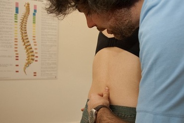

Dorn-Therapie
Die
Dorn-Therapie, auch „Dorn-Methode“ genannt, ist eine manuelle Methode, die an Chiropraktik erinnert, in ihrer Ausführung jedoch von dieser grundsätzlich verschieden ist und auch Elemente der
Meridianlehre der Traditionellen Chinesischen Medizin einbezieht.
Mit der
Dorn-Therapie lassen sich funktionelle Beinlängendifferenzen korrigieren und Wirbel, die sich nicht in ihrer normalen Position befinden, ohne mechanischen Druck, sondern mit der Mitarbeit und Bewegung des Patienten wieder einrenken. Da aus jedem Wirbel ein Nervenpaar austritt, das im gleichen Körpersegment liegende Organ- und Gewebsbereiche versorgt, werden gleichzeitig positive Wirkungen auf diese Bereiche erzielt.

© Julo Indemini